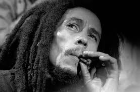

BOB MARLEY

'Cause, 'cause, 'cause I remember when we used to sit
In the government yard in Trenchtown
Oba observing the 'ypocrites
Mingle with the good people we meet
Good friends we have, oh, good friends we've lost
Along the way
In this great future, you can't forget your past
So dry your tears, I seh
Robert Nesta Marley, más conocido como Bob Marley (Nine Mile, Saint Ann, Jamaica; 6 de febrero de 1945-Miami, Florida, Estados Unidos; 11 de mayo de 1981), fue un músico, guitarrista y compositor jamaicano. Durante su carrera musical fue el líder, compositor y guitarrista de las bandas The Wailers (1964-1974) y Bob Marley & The Wailers (1974-1980). Marley sigue siendo el más conocido y respetado intérprete de la música reggae y es acreditado por ayudar a difundir tanto la música de Jamaica como el movimiento rastafari (del que era un miembro comprometido) a una audiencia mundial